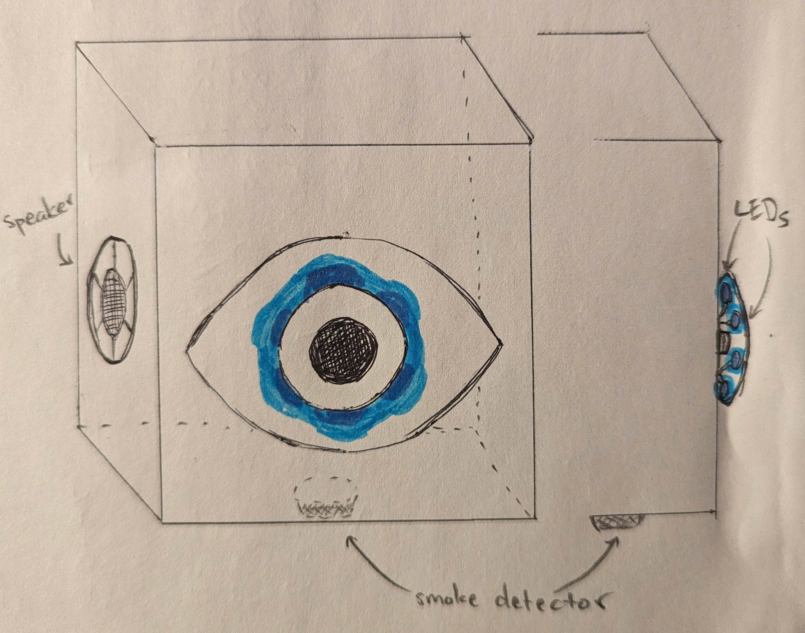
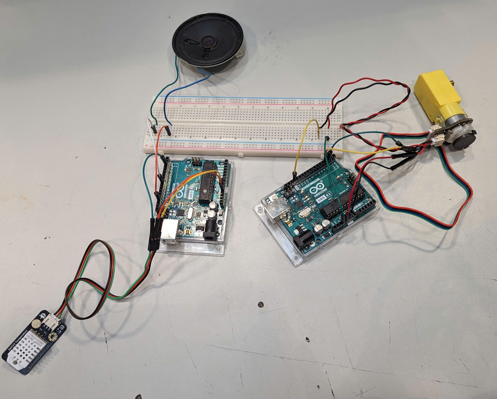
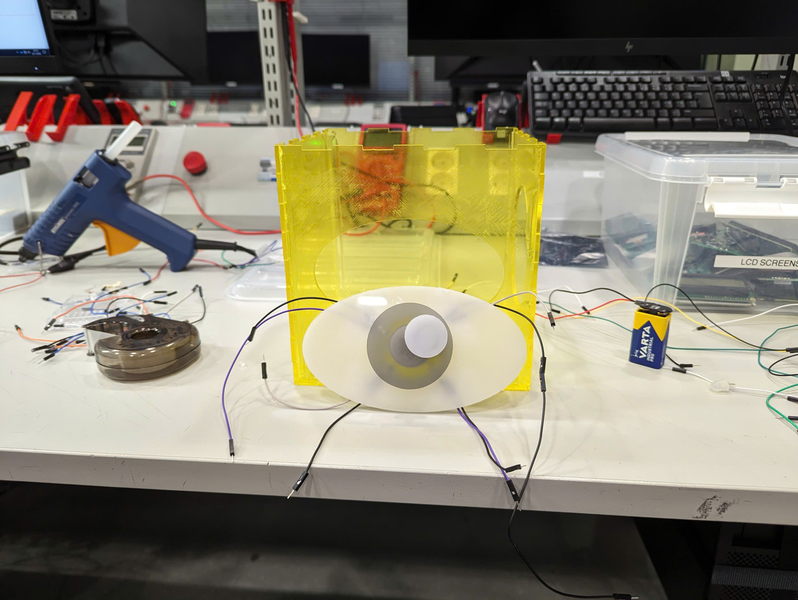

Overview
SmokEye was a group project exploring how an interactive electronic device could be used to discourage smoking. The idea was to combine sensors, lights and audio output into a physical product that could respond to user interaction.
The project covered several parts of the development process, from sketching the initial idea to building the electronics and assembling a physical prototype. It was an early opportunity for me to work on a device where the electronics, programming and physical design all had to come together.
From Sketch to Prototype

We started by working out what the device should do and how its different components could fit together. The initial sketch helped turn the idea into something more concrete before moving on to the electronics and physical prototype.
As the project developed, we had to consider not just the behaviour of the electronics, but also how the components would be arranged and housed in a physical enclosure.
Electronics and Programming

I worked with an Arduino UNO and C to program the interactive behaviour of the device. This involved connecting sensors and output components so that the device could respond to user input with visual and audio feedback.
The breadboard prototype gave us a way to test the circuit and make changes without having to commit to a final assembly. It was also where we could troubleshoot connections and check how the different components behaved together.
Enclosure and Physical Assembly

Alongside the electronics, we worked on the physical enclosure and assembly of the device. This meant thinking about where the components would sit and how the electronics could be incorporated into the overall form.
Getting from a circuit on a breadboard to something that could be held and used brought a different set of challenges. Component placement, wiring and available space all had to be considered as the prototype took shape.
What I Learned
SmokEye gave me a first look at the process of developing an interactive hardware product as part of a team. I became more comfortable moving between programming, circuit prototyping and physical assembly, and seeing how decisions in one area affect the others.
- Programming interactive behaviour with Arduino and C.
- Connecting and testing sensors and electronic output components.
- Building and troubleshooting breadboard circuits.
- Considering component placement and enclosure constraints.
- Developing a physical prototype through iterative testing.
Technologies and Tools
Arduino UNO · C · Sensors · Breadboard Prototyping · LEDs · Audio Output · Circuit Assembly